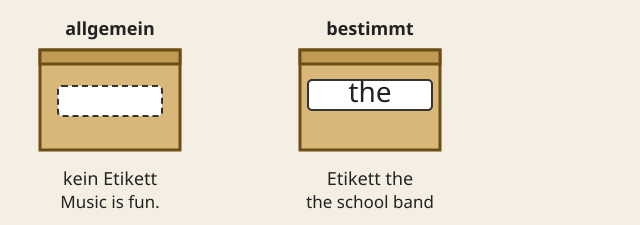

Kisten ohne Etikett: wann the wegfällt
Mit einem KI-Tutor lernen
Ein KI-Tutor erklärt dir diese Seite und hilft dir bei den Aufgaben. Wähl deinen Assistenten:
Mit Claude öffnen Mit ChatGPT öffnen Mit Mistral Vibe öffnen
Du nutzt dein eigenes Konto beim Anbieter. Der Assistent ist kein Angebot von lernapps.net: lernapps liefert nur Inhalte und Aufgaben. Die Wahl gilt für alle Seiten, nur auf diesem Gerät.
Der Chat der Schülerzeitung
Die Schülerzeitung „Millbrook News“ erscheint nächsten Freitag zum ersten Mal. Das Team schreibt im Gruppenchat. Aus Kapitel 1 kennst du die Kisten: Jedes Nomen steht in einer Kiste mit einem Etikett (a, an, the). Heute geht es um Kisten, auf denen kein Etikett klebt.
Aufgabe
Lösung
the richtige Antwort
the steht vor „door“ und meint eine bestimmte Tür, die alle kennen.
Close
Close ist das Verb und heißt „schließe“. Das Etikett steht vor dem Nomen.
please
please heißt „bitte“. Es ist kein Etikett und steht am Ende.
Das Etikett steht vor dem Nomen. the zeigt auf eine bestimmte Tür.
Mehr dazu: Lernlandkarte Englisch · Gebrauch des bestimmten Artikels
Das kannst du danach: Du entscheidest, wann auf einer Kiste kein Etikett steht, und wann the nötig ist. Lies zuerst den Chat. Er hat dreizehn nummerierte Zeilen.
| Zeile | Wer | Nachricht |
|---|---|---|
| 1 | Mr Hill | Good morning, team! The first issue of Millbrook News is next Friday. What is our big story? |
| 2 | Ellie | Music! Music is fun, and I love the school band. |
| 3 | Amir | Hmm. The band is very loud. Some people don't like it. |
| 4 | Sophie | Life is short, Amir. Let's write about the concert. It is on Saturday. |
| 5 | Peter | I can't come. I go to school by bus, but on Saturday I play football. |
| 6 | Ellie | Peter is always in bed until ten on Saturday! |
| 7 | Peter | That's not true! I have breakfast at eight. Then I play football with friends. |
| 8 | Sophie | Friends are important, Peter, but we need photos of the band. Can you take them, Amir? |
| 9 | Amir | OK. I can take my camera to the concert. |
| 10 | Mr Hill | Good. People love pictures! Send the photos to me by email on Sunday. |
| 11 | Ellie | And I write the report. English is easy for me. |
| 12 | Sophie | Mr Hill, can we meet at the school on Saturday? The concert is in the hall. |
| 13 | Mr Hill | Yes. Please finish the text before school on Monday. |
| Englisch | Deutsch |
|---|---|
| issue | Ausgabe einer Zeitung |
| concert | Konzert |
| loud | laut |
| report | Bericht |
| Year 8 | Klasse 8 (in England die achte Jahrgangsstufe) |
| until | bis |
| Life is short. | Das Leben ist kurz. So sagt man, wenn man etwas nicht aufschieben will. |
Aufgabe
Lösung
nächsten Freitag
Nächsten Freitag erscheint die erste Ausgabe der Zeitung, nicht das Konzert.
am Samstag richtige Antwort
Sophie sagt, dass das Konzert am Samstag ist.
am Sonntag
Am Sonntag schickt Amir seine Fotos an Mr Hill.
Das Konzert ist am Samstag. Die Zeitung erscheint nächsten Freitag.
Mehr dazu: Lernlandkarte Englisch · Gebrauch des bestimmten Artikels
Aufgabe
Lösung
Zeile 5
In Zeile 5 sagt Peter, dass er am Samstag Fußball spielt, aber nicht, dass er im Bett liegt.
Zeile 6 richtige Antwort
In Zeile 6 behauptet Ellie, dass Peter am Samstag bis zehn im Bett ist.
Zeile 7
In Zeile 7 sagt Peter, dass er um acht frühstückt.
Zeile 6 sagt es: Ellie behauptet, dass Peter bis zehn im Bett ist.
Mehr dazu: Lernlandkarte Englisch · Gebrauch des bestimmten Artikels
Wann die Kiste kein Etikett braucht
Im Chat steht oft kein Etikett: „Music is fun“ (Zeile 2), „Life is short“ (Zeile 4). Wer allgemein von Mehrzahl oder von nicht zählbaren Dingen spricht, lässt das Etikett weg. Auch bei school, bed und home fehlt es: „I go to school“ (Zeile 5). Dagegen steht the bei etwas Bestimmtem: „the school band“ (Zeile 2), „the photos“ (Zeile 10).

Links die Kiste ohne Etikett (etwas Allgemeines), rechts die Kiste mit the (etwas Bestimmtes).
Quelle: eigene Zeichnung. Lizenz: CC-BY-4.0.| Wann kein Etikett? | Beispiel |
|---|---|
| Allgemeines in der Mehrzahl | Cats are nice. |
| Allgemeines, nicht zählbar | Milk is good for you. |
| Schule, Bett, Zuhause, Arbeit | I am in bed. |
| Wochentage und Mahlzeiten | I have dinner on Tuesday. |
Merke
Bei school, bed, hospital und work meinst du nicht das Gebäude, sondern das, was man dort tut (lernen, schlafen, als Patient liegen, arbeiten), bei home einfach „zu Hause“: be in hospital heißt „im Krankenhaus liegen“. be in the hospital heißt, dass du im Gebäude bist, zum Beispiel zu Besuch. Vergleiche mit Zeile 5 und Zeile 12 im Chat. Nach by steht auch kein Etikett: by train, by car. Sobald klar ist, welches Ding gemeint ist, brauchst du wieder the.
Übung
Aufgabe
Wähle die richtige Form. Eine Kiste kann auch ohne Etikett bleiben.
Tipp
Frag dich, ob etwas Allgemeines oder etwas Bestimmtes gemeint ist.
- Kinder lieben Pizza. → … love pizza.
- Amir geht jeden Tag zur Schule. → Amir goes to … every day.
- Sophies Vater ist jetzt bei der Arbeit. → Sophie's father is at … now.
- Bitte öffne das Fenster. → Please open ….
- Wasser ist wichtig für Tiere. → … is important for animals.
- Ellie isst um halb eins zu Mittag. → Ellie has … at half past twelve.
Lösung
- Children love pizza.
- Amir goes to school every day.
- Sophie's father is at work now.
- Please open the window.
- Water is important for animals.
- Ellie has lunch at half past twelve.
Aufgabe
Lösung
Richtige Antwort: Ich gehe als Schüler zur Schule. – I go to school.; Ich gehe zum Schulgebäude, um mit dem Direktor zu sprechen. – I go to the school.; Pizza ist gut (allgemein). – Pizza is good.; Die Musik der Band ist toll. – The music of the band is great.
Allgemeines und der Besuch von school als Aufgabe stehen ohne the. Ein bestimmtes Gebäude oder eine bestimmte Musik braucht the.
Mehr dazu: Lernlandkarte Englisch · Gebrauch des bestimmten Artikels
Aufgabe
Schreibe den Satz auf Englisch.
Tipp
Allgemeines und feste Ausdrücke bekommen kein Etikett.
- Amir liebt Pizza.
- Ellie fährt mit dem Bus zur Schule.
- Wir essen in der Schule zu Mittag.
- Freunde helfen einander.
Lösung
- Amir loves pizza. (auch richtig: Amir likes pizza.)
- Ellie goes to school by bus.
- We have lunch at school.
- Friends help each other.
Aufgabe
Lösung
Richtige Antwort: 1. Is, 2. Amir, 3. at, 4. school, 5. today?
Die Frage beginnt mit Is, dann kommt die Person, danach at school ohne the und zuletzt today.
Mehr dazu: Lernlandkarte Englisch · Gebrauch des bestimmten Artikels
Aufgabe
Lösung
Richtige Antwort: Die Aussage stimmt nicht.
Bei schlafen gehen heißt es go to bed ohne the. Mit the würdest du zum Möbelstück gehen.
Mehr dazu: Lernlandkarte Englisch · Gebrauch des bestimmten Artikels
Aufgabe
Hör zu und schreibe den ganzen Satz auf.
Tipp
Achte auf die kleinen Wörter wie at, on und to.
- KI
- KI
- KI
Lösung
- We play tennis on Saturday.
- Dogs are friendly animals.
- Sophie is at home on Sunday.
Selbst sagen und schreiben
Aufgabe
Hör zu, sprich nach und nimm dich auf. Vergleiche dann mit dem Original.
Tipp
Hör den Satz zuerst. Sprich dann langsam nach und achte darauf, dass in diesen Sätzen kein the vorkommt.
- Ellie has breakfast at home.KI
- People love good music.KI
- Peter goes to bed at ten.KI
Zum Aufnehmen braucht diese Aufgabe JavaScript. Die Beispiele kannst du auch ohne anhören.
Lösung
- Ellie has breakfast at home.
- People love good music.
- Peter goes to bed at ten.
Offene Aufgabe
Ellie schreibt: „Music is fun.“ Schreibe für Millbrook News zwei bis drei Sätze über etwas, das dir wichtig ist (zum Beispiel: Sport is important. I do sport at school.)
Eine gute Antwort enthält:
Lösung
Music is important for me. I play at home. The band is great.
Wie es weitergeht
Der Chat ist fertig, die erste Ausgabe wächst. In der Woche davor will Mr Hill zeigen, was die Polizei der Schule rät. Auf der nächsten Seite lernst du, warum news ein anderes Verb braucht als police.
Fehler gefunden oder eine Idee für diese App?